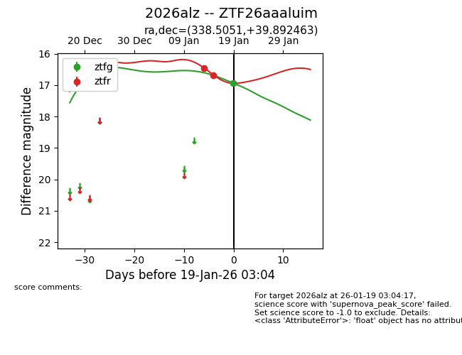
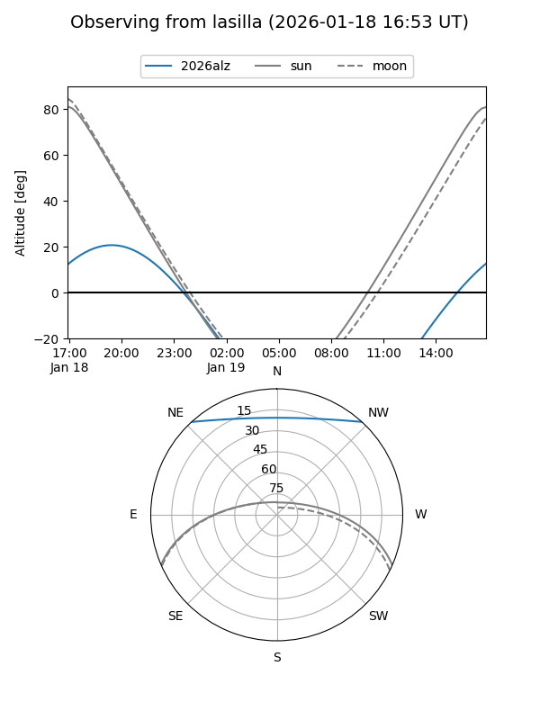
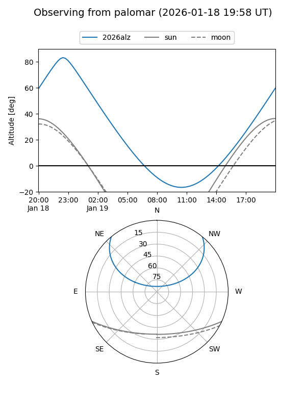
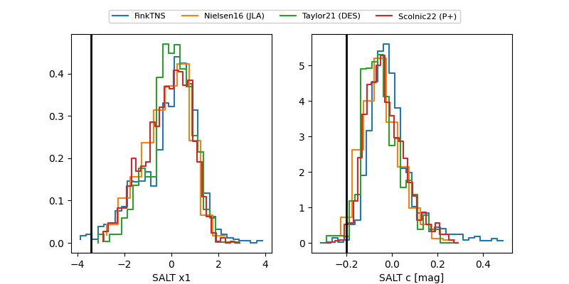

2026alz
Target 2026alz at 2026-01-21 03:11
Aliases and brokers:
FINK: link
Lasair: link
ALeRCE: link
TNS: link
YSE: link
alt names
ZTF26aaaluim (ztf,fink_ztf)
2026alz (tns,yse)
Coordinates:
equatorial (ra, dec) = 338.5051,+39.89246
equatorial (HMS+DMS) = 22:34:01.23,+39:53:32.87
galactic (l, b) = (96.1988,-15.74077)
Flags:
Photometry:
last ztfg=16.93, ztfr=17.09
2 ztfg, 3 ztfr detections
Lightcurve

Visibility


Additional plots
